Taking Care of the Skin
🌟 Learn how to keep your skin clean, healthy, and safe through pictures, practice, and games!
🏫 CONNECT — What do you already know?
Look at the pictures. Which actions help keep your skin clean and safe?
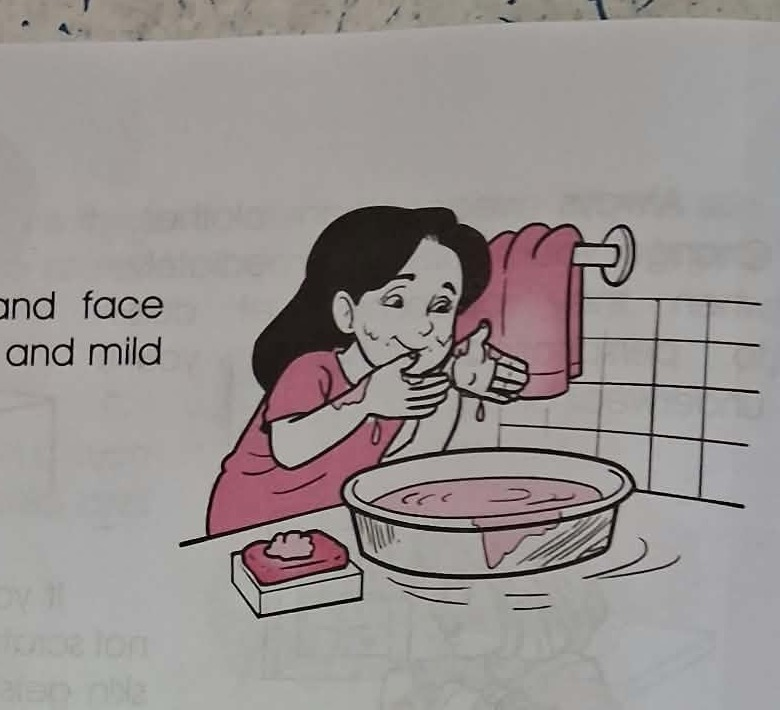
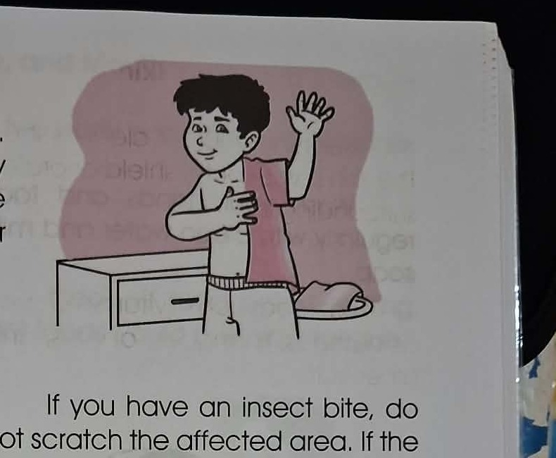
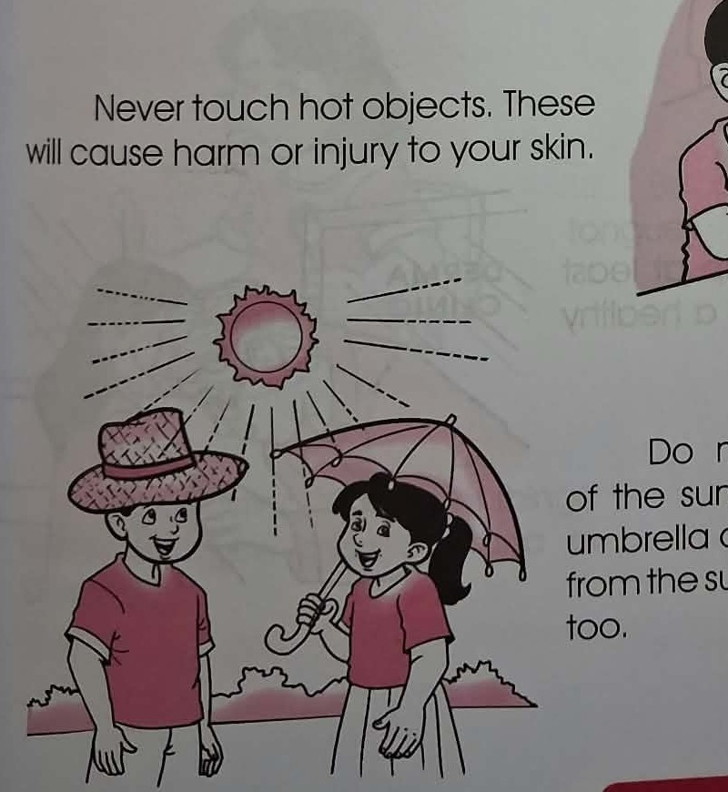
📖 LEARN — Your Skin Is Your Body's Outer Shield
The lesson source explains that keeping yourself clean is an important way to take care of your skin. Your skin helps protect your body from harmful things around you.
1️⃣ Keep Your Skin Clean
Take a bath regularly. Use clean water and mild soap. A strong soap can dry and irritate the skin.
Use a clean towel to wipe yourself after taking a bath.
Wash your hands and face regularly with clean water and mild soap.
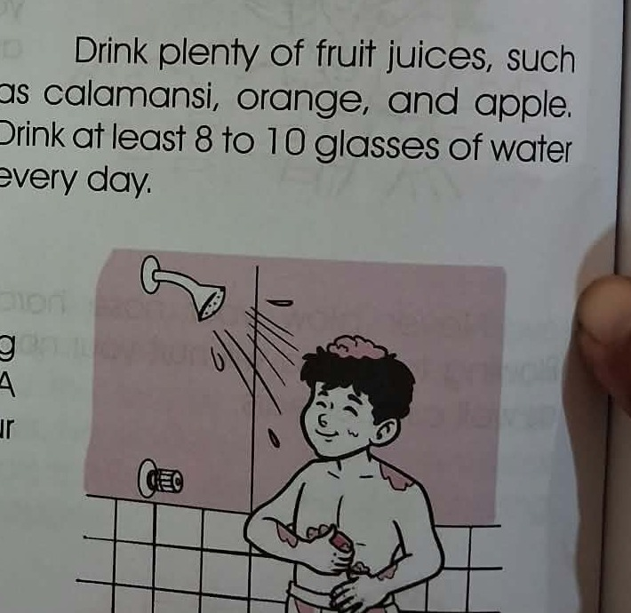
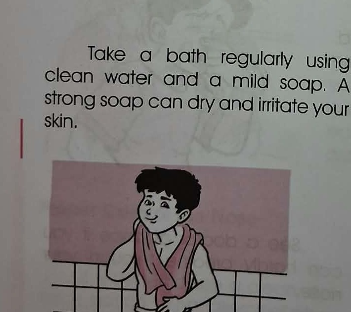
2️⃣ Eat Well and Drink Enough Water
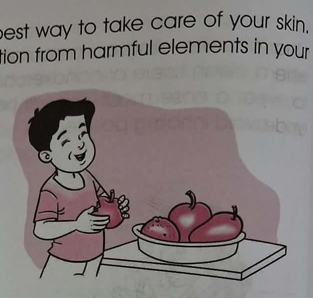
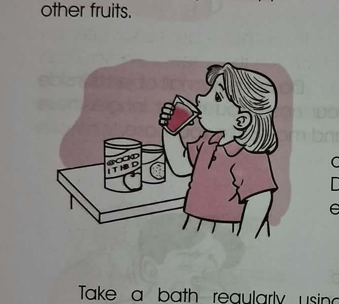
The source recommends foods rich in vitamin C and plenty of fluids as part of skin care.
3️⃣ Protect Your Skin
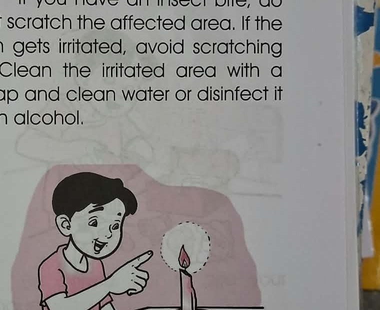
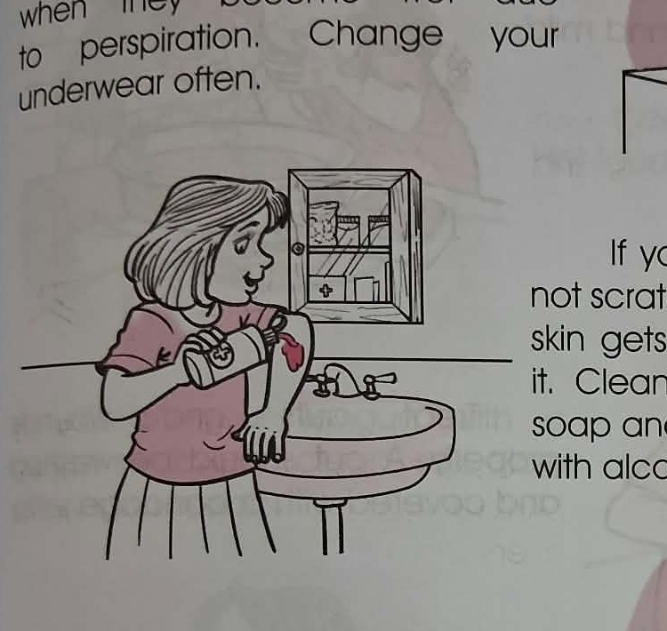
4️⃣ Care for Cuts, Wounds, and Your Skin
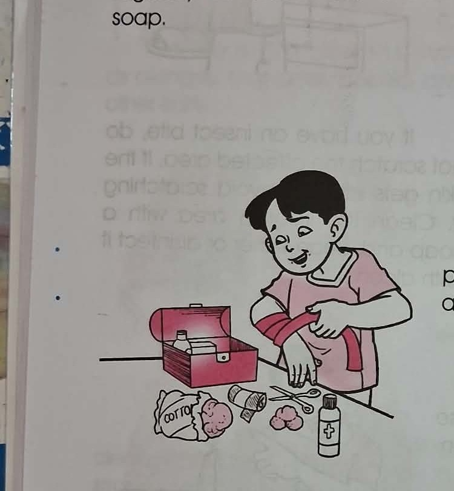
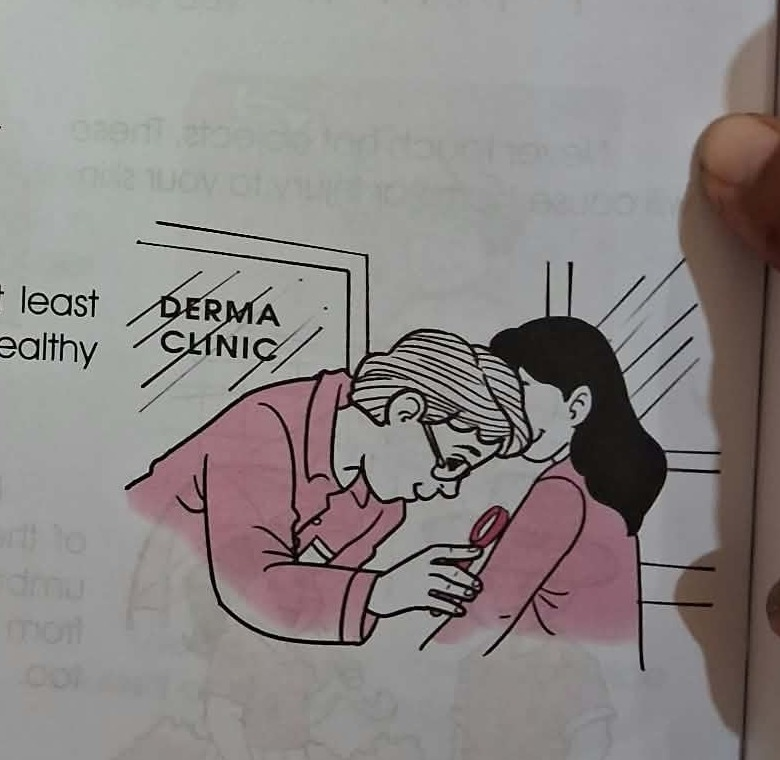
⚡ Quick Review
🤝 LET'S DO IT — Guided Practice
Teacher and learner solve these together. Read the clue, think, then choose.
🎮 GAME 1 — Skin Care Sort
Tap each card, then choose whether it is a GOOD HABIT or UNSAFE HABIT.
🧩 GAME 2 — Match the Picture to the Care Tip
Tap a picture and then tap the matching care tip.
🔎 GAME 3 — Picture Detective
Study the picture and answer the question.
🧠 BRAIN CHALLENGE
These questions ask you to apply what you learned to everyday situations.
🏆 FINAL CHALLENGE
Show what you know. There are 10 new questions.
🎉 YOU DID IT!
Keep practicing and learning!
💭 REFLECT
How do you feel about taking care of your skin?
📚 Source Pictures — See the Lesson Images
These crops come from the textbook-page photos you supplied. They are used here as visual teaching aids so learners can see what each care tip means.
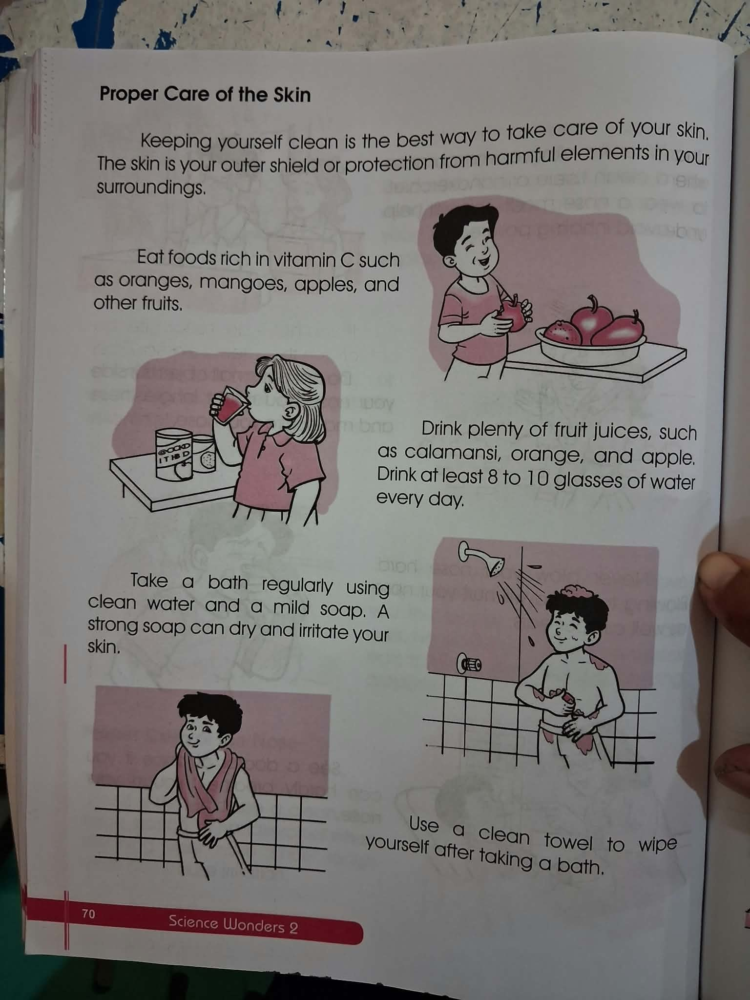
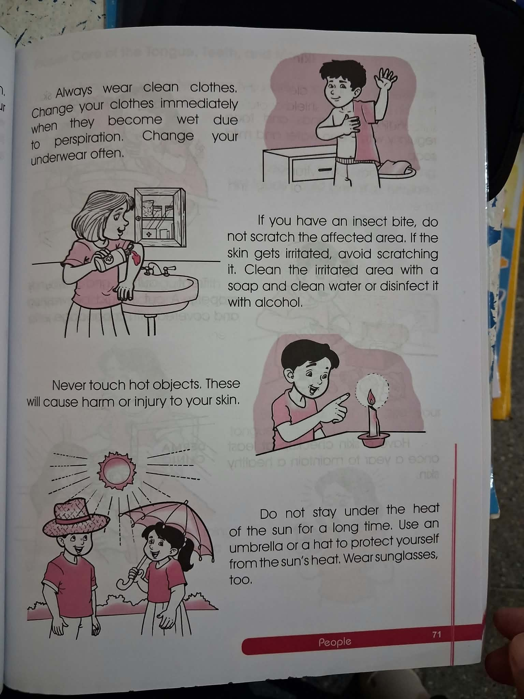
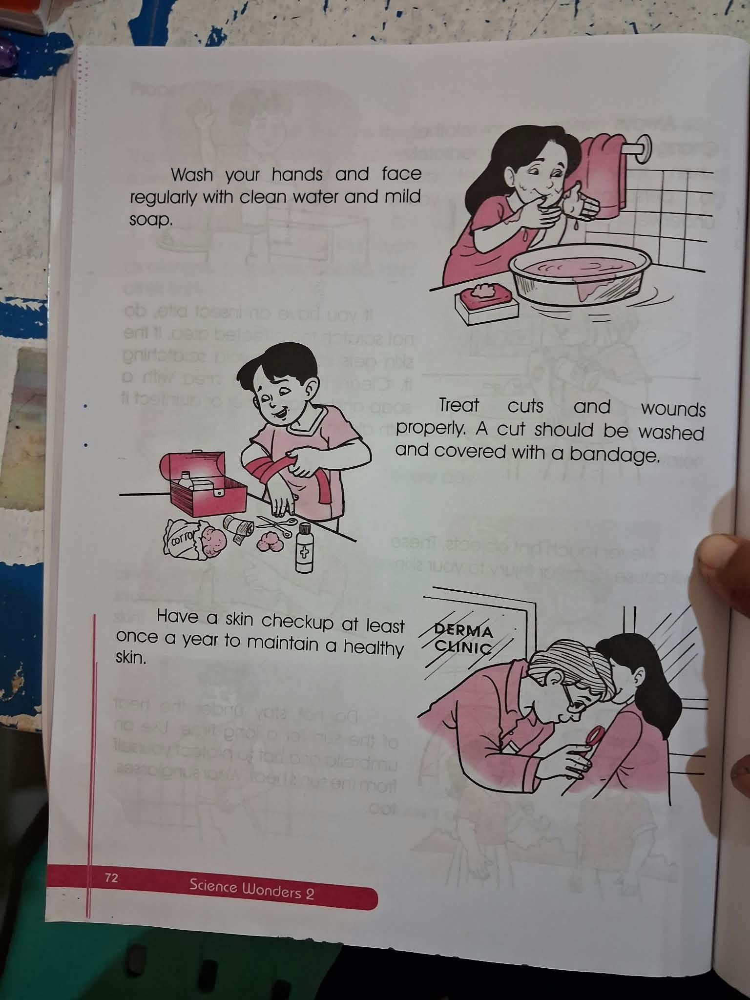